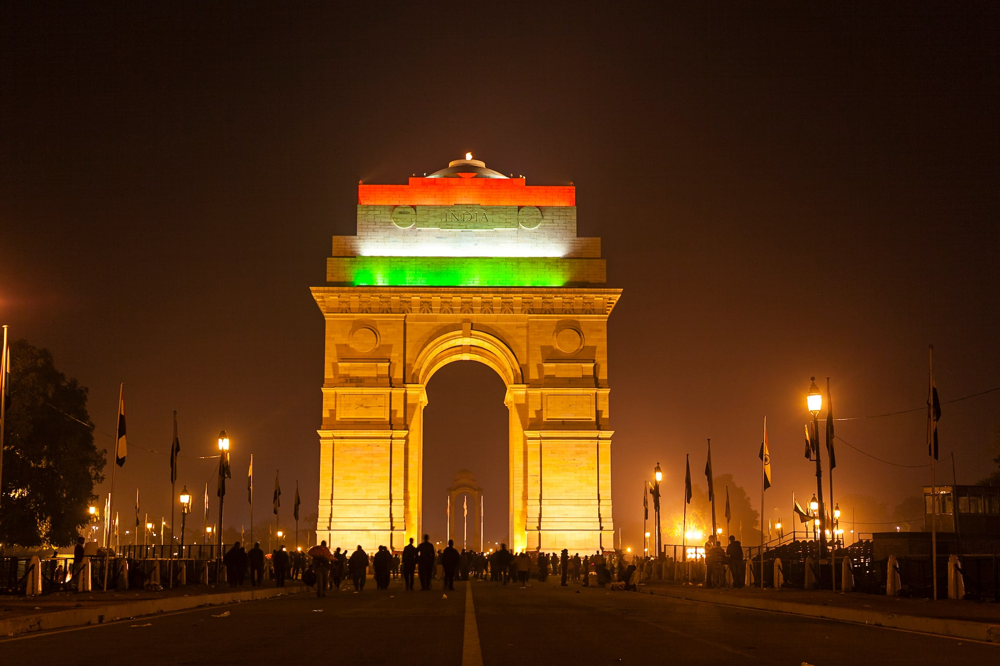

India Gate is a 42m tall war memorial in New Delhi. Built in 1931 by Sir Edwin Lutyens, it honors over 84,000 Indian soldiers who died in World War I and the Third Anglo-Afghan War. It is a major tourist spot and national pride.

Features
Show India Gate Features
Completed: 1931
Architect: Edwin Lutyens
Height: 42m
Location: New Delhi
Inscribed: 13,000+ soldiers
Major tourist attraction
Amar Jawan Jyoti (eternal flame)
Surrounded by gardens
FAQ
To honor Indian soldiers who died in WWI and other wars.
Sir Edwin Lutyens, British architect.
A memorial flame for soldiers, added after 1971 Indo-Pak war.